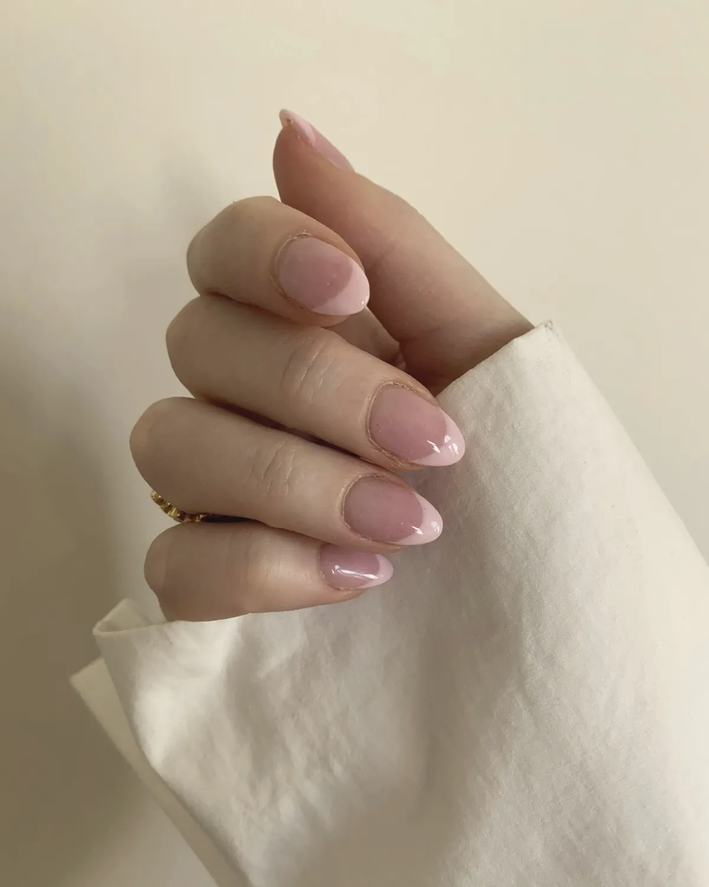
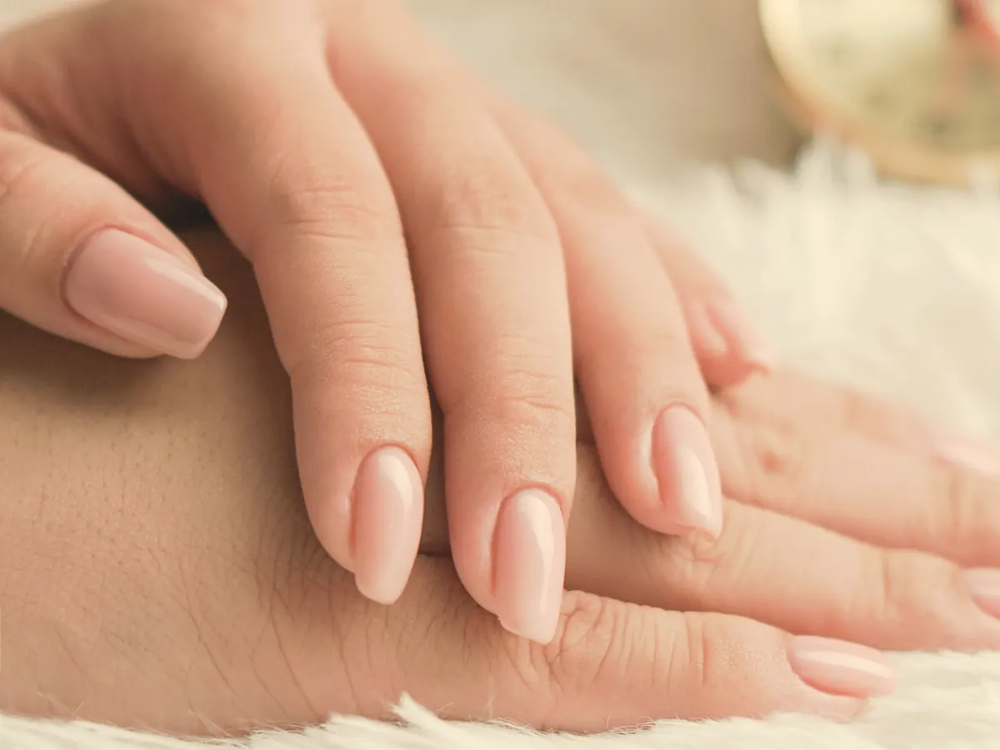
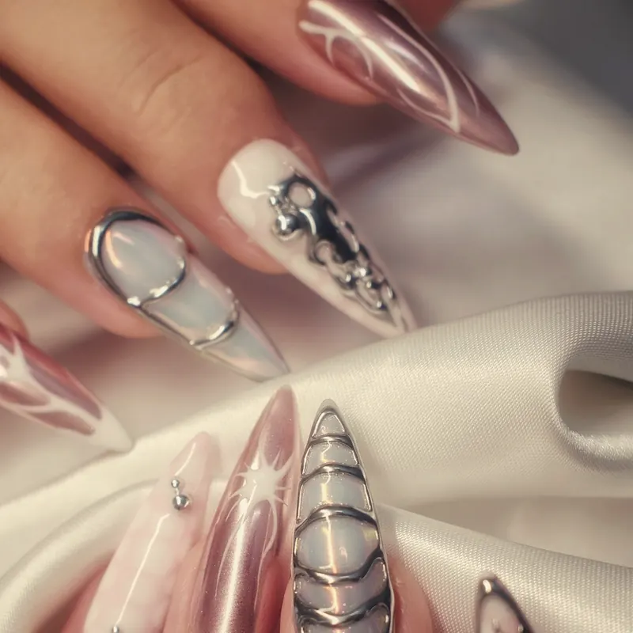
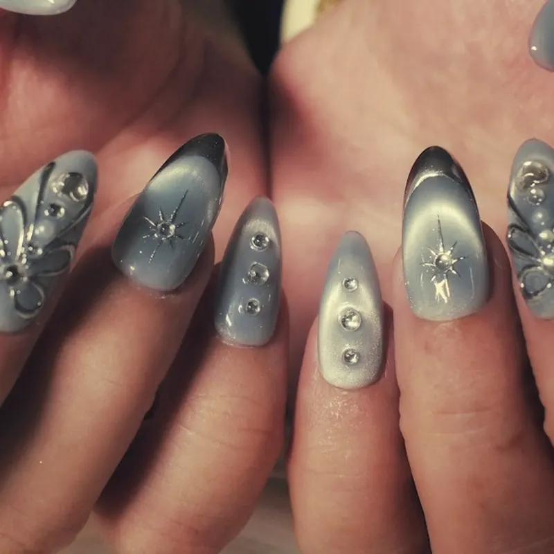
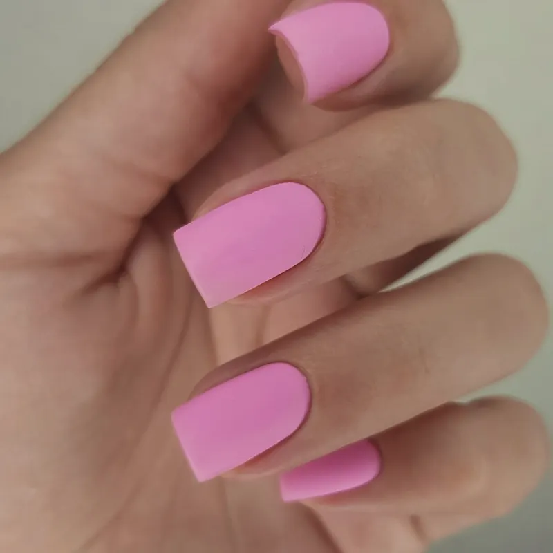
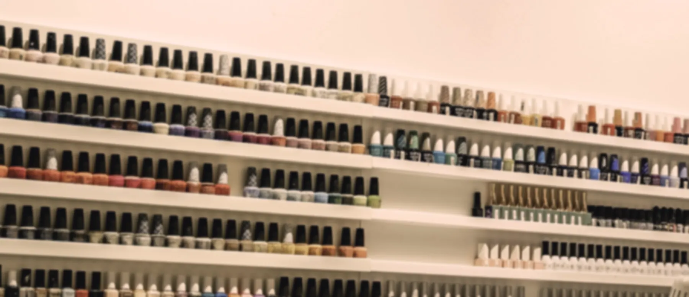

Case study · Nail atelier, Marylebone
She tries every shade before she books.
Verrall paints nails in a glass-roofed arcade off Marylebone High Street. Its clients choose by colour, so its site starts with colour: tap a tip on the fan and the hand wears it.

No. 14Petal
The colour before the chair.
The hand fills the first screen and the house shades sit beside it. She taps one; the hand wears it, the card names it, and every Book button on the page turns that colour and carries its name into the message.
- Base coat · StarterThe shade on the hand. The salon's own photographs of one hand in its shades, fading from one to the next.
- Top coat · SignatureShade on your hand. Any house shade laid onto the nails, with the photograph's light and gloss kept, on three skin tones.
- Base coat · StarterThe next free time. Read from the salon's own Google Sheet. If the sheet is old, it says to message instead of showing a time.
No. 45Claret
This month's three.
Each month the salon picks three sets, an art set, a chrome and a French, and shows them large, with the time and the price. The month ends; two weeks later the edit steps aside by itself.
- Colour · PlusThe monthly edit. Three or four sets, large, on the home page.
- Colour · PlusNail art. Every set by shape, length and level, each with its time and price, and Ask for this.
- Colour · PlusShapes and shades. The shapes the salon files, on real sets; every shade by family, each booking in its own colour.
No. 3Milk
Priced by the hour.
Thirty minutes, sixty, ninety. The menu is grouped by how long she has, each treatment with its price and one plain line, and a photograph of the work for each hour.
- Base coat · StarterThe menu by the hour. From £30 for a shape and polish to £82 for the hand ritual, on this demo.
- Base coat · StarterGel or BIAB. Side by side in the salon's words: how long each lasts, removal and infills.
- Base coat · StarterThe room. The colour wall and the counter, with one line.
No. 41Scarlet
Built, priced, and sent.
Gel or BIAB, the shape, the length, the finish, the shade and how much art. The time and the price add up as she goes, from the salon's own figures, and the whole set arrives on its WhatsApp in one message.
- Top coat · SignatureBuild your set. Six choices in, the time and price out, sent with every choice named.
- Colour · PlusThe menu page. Every treatment, then removals, policies and the questions people ask before booking.
No. 19Lilac milk
One date in, three out.
A bride gives one date. The site counts back from it: the trial with the dress and flowers, a strengthening set, the final set two days before. She saves all three to her calendar in one file.
- Colour · PlusBridal nails. The trial and the final set in the salon's words, with a request on WhatsApp.
- Top coat · SignatureThe bridal timeline. One date in, every appointment out, in one calendar file.
- Top coat · SignatureHen and bridal parties. The date, how many, and what everyone wants, in one message.

No. 27Sage
Three weeks on, she's back.
BIAB grows out. She gives the day of her set, the site gives the day of her infill and puts it in her calendar. Next time, her usual set is waiting on her own phone, one tap from the salon's WhatsApp.
- Colour · PlusThe infill reminder. Two, three or four weeks on, worded as a date and saved to her calendar.
- Colour · PlusYour usual. The set this phone last asked for, ready to send again. Remembered only on her phone.
- Colour · PlusGift vouchers. An amount, two names and a line, shown as the card, ordered on WhatsApp.
No. 60Onyx
Under the glass roof.
Which station, which turning, where to park, whether there's a step. Then the people who'll do her nails, the salon's latest work, and the finishes close enough to see the light move.
- Base coat · StarterPlan your visit. Every route, parking, access, the hours and every question, on every plan.
- Colour · PlusThe team and the work. Who does what, on which days, and the salon's feed.
- Top coat · SignatureThe finishes up close. Chrome, cat-eye and matte as stills; on a client's site, her own macro clips play on a tap.



The plans
In three coats.
A base that holds, the colour, then the shine. Every plan is on a 12-month minimum, then a month's notice, and any single feature can be added to a smaller plan.
Base coat
Starter
£99 + £25 a month
- The home page and Plan your visit
- The shade on the hand, with Book in its colour
- The next free time from the salon's Google Sheet
- The menu by the hour, gel or BIAB, the room
Colour
Plus
£199 + £30 a month
- Up to five pages, chosen from the menu, shades, nail art, shapes, bridal and gifts
- The month's edit on the home page
- Your usual, and the infill reminder
- The team and the salon's work
Top coat
Signature
£349 + £35 a month
- Up to 20 pages
- Shade on your hand, on three skin tones
- Build your set, priced as she goes
- The bridal timeline, parties, the finishes up close
Running costs stay at nothing beyond hosting: the next free time lives in the salon's own Google Sheet, payments go through its own Stripe links, and every booking, set and voucher arrives on its WhatsApp.
On her phone
Touch dry in seconds.
- 80First, cold
- 97Second
- 100Third
- 100Fourth
- 94Fifth
Lighthouse on a phone profile, five runs on Verrall's home page: performance 80 on the first, cold run, then 97, 100, 100 and 94; accessibility 100 on every run; layout shift 0 to 0.001. The whole site's script is 15.0 KB and its styles 14.8 KB, compressed, and the first screen's images are 37.5 KB. The hand's colours are worked out the first time she reaches for a shade, never while the page loads.
Your salon
Your shades, on her hand.
Send us your Instagram and your shade list, and we'll make a free mockup of your home page, with your own photographs and your own colours.
hello@sitefloor.com